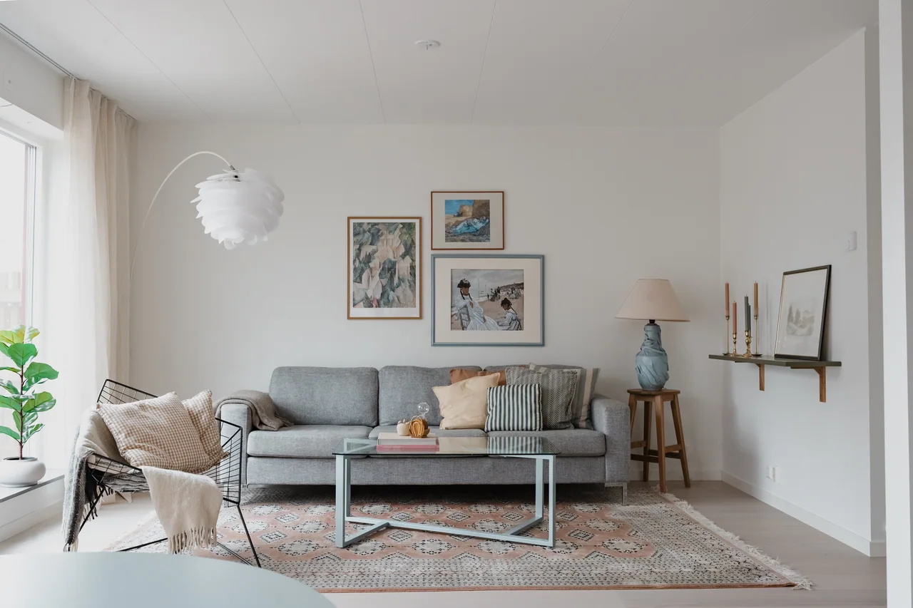
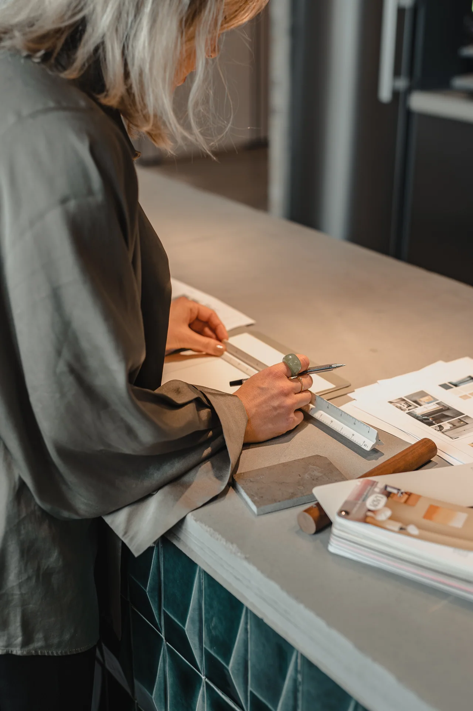

Personligt,
på riktigt.
PUR är Martina Liljeroths studio för inredning och koncept, med bas i Varberg.
Med bakgrund inom mode, koncept och butiksmiljöer tar Martina med sig ett öga för helheter in i varje rum. Här möts material, möbler och människor.
Uppdragen varierar från privata hem till visningshus och gemensamma miljöer. Utgångspunkten är densamma: att förstå vad platsen behöver och vad som gör den personlig.

Ge det befintliga
en ny plats.
En möbel med historia kan bära ett helt rum. Vi ser värdet i det som redan finns och låter omarbetade favoriter möta nya, genomtänkta val.
En helhet som
är din.
Det personliga uttrycket växer ur samtalet. Vi arbetar med material, färg och funktion för att skapa miljöer som känns äkta och går att leva i.


Omsorgen sitter
i valen.
Vilken kulör binder ihop rummen? Vad kan sparas och få nytt liv? När behöver en möbel ritas för just den här platsen?
Det är i de frågorna som en idé blir ett genomarbetat inredningskoncept.
Utforska tjänsternaSka vi ge din
idé ett rum?
En ny bostad, en plats som behöver förändras eller en möbel som saknas. Berätta vad du tänker.
Prata med Martina